Что приготовить из остатков
Вчерашний рис, картошка, хлеб и курица — во второе блюдо. 38 рецептов: у каждого время, калории и БЖУ на порцию, пошаговые инструкции и список покупок
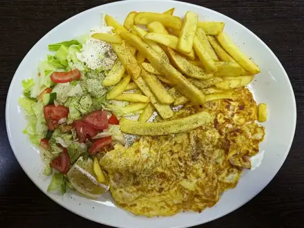
Омлет с курицей15 мин · 361 ккал · Б 34 г · Завтрак- Гренки из чёрствого хлеба с чесноком15 мин · 317 ккал · Б 6 г · Закуска
- Омлет с остатками овощей15 мин · 361 ккал · Б 18 г · Завтрак
- Жареная гречка с яйцом и луком15 мин · 445 ккал · Б 16 г · Второе блюдо
- Несладкие гренки с яйцом и сыром на сковороде15 мин · 439 ккал · Б 19 г · Завтрак
- Жареный рис с яйцом и овощами20 мин · 532 ккал · Б 16 г · Второе блюдо
- Жареный рис с овощами по-домашнему20 мин · 401 ккал · Б 11 г · Второе блюдо
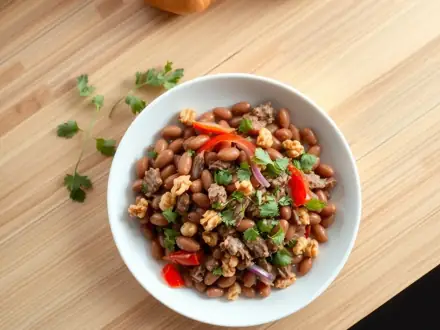
Салат «Тбилиси» с фасолью и говядиной20 мин · 465 ккал · Б 29 г · Салат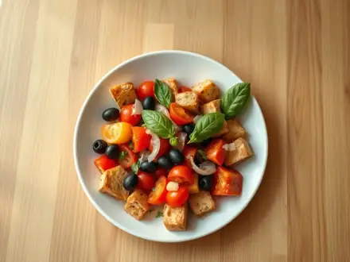
Панцанелла с помидорами20 мин · 370 ккал · Б 8 г · Салат- Фриттата с макаронами20 мин · 565 ккал · Б 31 г · Второе блюдо
- Картофельные оладьи из вчерашнего пюре с сыром20 мин · 530 ккал · Б 17 г · Второе блюдо
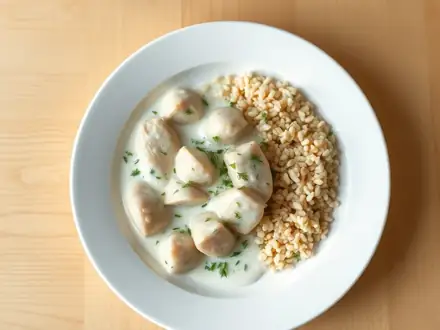
Курица из супа в сметанном соусе с чесноком20 мин · 554 ккал · Б 48 г · Второе блюдо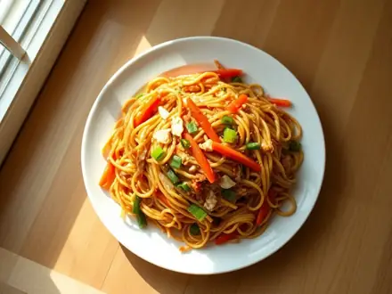
Жареные макароны с овощами по-китайски20 мин · 525 ккал · Б 21 г · Второе блюдо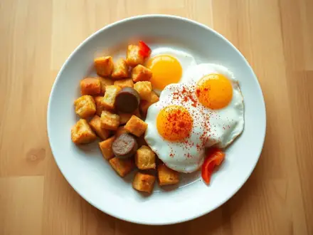
Миги - жареный хлеб с колбасками по-испански20 мин · 781 ккал · Б 28 г · Второе блюдо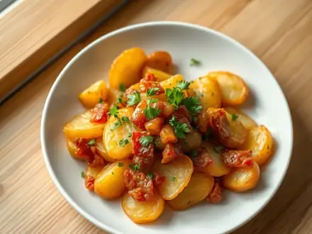
Браткартофель - жареная отварная картошка с беконом20 мин · 596 ккал · Б 17 г · Второе блюдо- Быстрый рамен с курицей и яйцом в мешочек20 мин · 551 ккал · Б 45 г · Суп
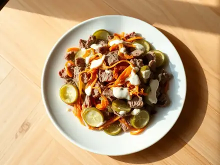
Салат «Обжорка» с говядиной и солёными огурцами20 мин · 556 ккал · Б 29 г · Салат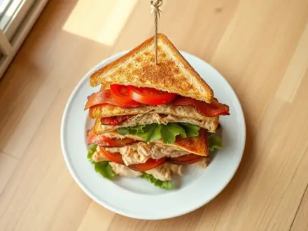
Клаб-сэндвич с курицей и беконом20 мин · 667 ккал · Б 41 г · Второе блюдо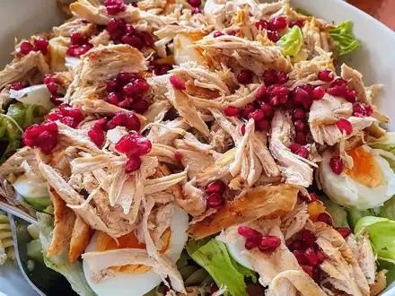
Салат из курицы из супа25 мин · 369 ккал · Б 31 г · Салат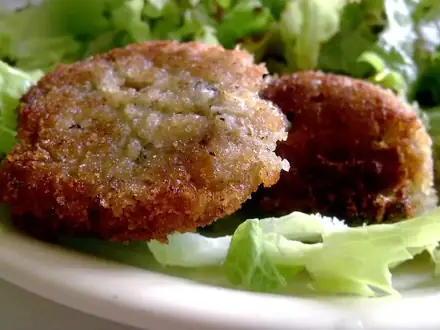
Оладьи из вчерашнего риса25 мин · 380 ккал · Б 10 г · Завтрак- Хэш из картошки и отварной говядины25 мин · 732 ккал · Б 45 г · Второе блюдо
- Оякодон - рис с курицей и яйцом по-японски25 мин · 713 ккал · Б 44 г · Второе блюдо
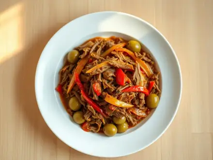
Ропа вьеха - рваная говядина в томатном соусе25 мин · 625 ккал · Б 49 г · Второе блюдо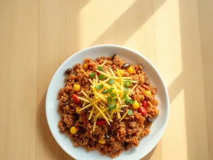
Мексиканский рис с фаршем и фасолью на сковороде25 мин · 660 ккал · Б 32 г · Второе блюдо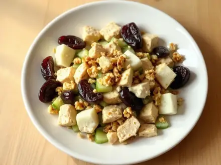
Салат с курицей, черносливом и грецкими орехами25 мин · 605 ккал · Б 36 г · Салат- Рулетики из лаваша с картофельным пюре и грибами на сковороде25 мин · 457 ккал · Б 12 г · Второе блюдо
- Котлеты из гречневой каши30 мин · 388 ккал · Б 11 г · Второе блюдо
 Макароны по-флотски из отварного мяса30 мин · 631 ккал · Б 34 г · Второе блюдо
Макароны по-флотски из отварного мяса30 мин · 631 ккал · Б 34 г · Второе блюдо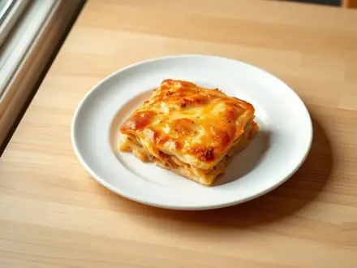
Запеканка из пюре с курицей и сыром30 мин · 615 ккал · Б 41 г · Второе блюдо- Котлеты из отварной курицы30 мин · 518 ккал · Б 41 г · Второе блюдо
- Энчилада с курицей30 мин · 767 ккал · Б 48 г · Второе блюдо
- Тартифлет - картошка с беконом и сыром под сливками30 мин · 776 ккал · Б 31 г · Второе блюдо
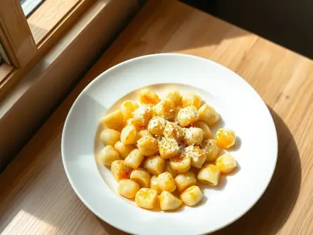
Ньокки из вчерашнего картофельного пюре30 мин · 650 ккал · Б 20 г · Второе блюдо- Запеканка из чёрствого хлеба с ветчиной и сыром30 мин · 588 ккал · Б 30 г · Второе блюдо
- Аранчини из вчерашнего риса с моцареллой30 мин · 658 ккал · Б 22 г · Второе блюдо
- Запеканка из макарон с сыром и яйцом35 мин · 358 ккал · Б 19 г · Второе блюдо
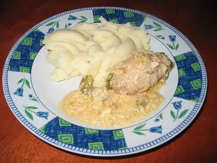
Зразы из вчерашнего пюре с грибами45 мин · 377 ккал · Б 10 г · Второе блюдо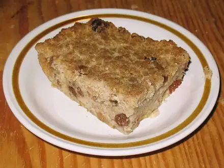
Хлебный пудинг60 мин · 474 ккал · Б 15 г · Десерт
Другие подборки
- Что приготовить из курицы
- Что приготовить из фарша
- Что приготовить из мяса
- Что приготовить из рыбы
- Что приготовить из картошки
- Что приготовить из яиц
- Что приготовить из творога
- Что приготовить из кабачков
- Что приготовить из капусты
- Что приготовить из грибов
- Что приготовить из риса
- Что приготовить из макарон
- Что приготовить из гречки
- Быстрый ужин за 30 минут
- Быстрый завтрак за 20 минут
- Что приготовить на скорую руку
- ПП-рецепты: лёгкие блюда до 400 ккал
- Белковые блюда: от 25 г белка на порцию
- Дешёвые рецепты из простых продуктов
- Что приготовить ребёнку
- Постные блюда
- Блюда на пару
- Что приготовить в духовке
- Простые супы
- Простые салаты
- Выпечка и десерты
- Блюда на праздничный стол